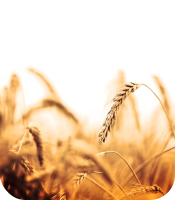
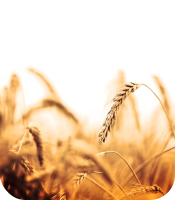

Detecte, Proteja, Cultive: O poder da inteligência artificial para cuidar das suas plantas.


 

Nossa solução utiliza IA e aprendizado de máquina para detectar doenças antecipadamente em plantas por meio de imagens de folhas.


Com nosso aplicativo, os agricultores podem evitar perdas significativas nas colheitas ao detectar e prevenir doenças de plantas de forma rápida e precisa.
Banco de dados: Contém informações sobre diversas doenças de plantas e seus sintomas relacionados.
IA: Analisa imagens de folhas para identificar doenças, ajudando agricultores a prevenir perdas nas colheitas.
Aprendizado de máquina: Ensina o sistema a reconhecer padrões e aprimorar a detecção de doenças de plantas.
Nosso
Objetivo
1
Aumentar a produtividade e reduzir perdas nas colheitas
2
Promover práticas agrícolas sustentáveis e seguras, reduzindo os agrotóxicos e protegendo o meio ambiente
3
Reduzir a ocorrência de doenças e pragas nas plantações